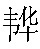

木刻究竟是刻的绘画，所以基础仍在素描及远近，明暗法，这基础不打定，木刻也不会成功。
注 释
[16] 此则据唐诃作《鲁迅先生和中国新兴木刻运动》一文（载1936年北平中国大学《文艺动态》创刊号）所引编入。据鲁迅日记，此信当写于1934年3月22日。刘鄂（1913—1938），刘，字

鄂，河南信阳人。当时是上海美术专科学校学生。7 致刘
第14卷
木刻究竟是刻的绘画，所以基础仍在素描及远近，明暗法，这基础不打定，木刻也不会成功。
注 释
[16] 此则据唐诃作《鲁迅先生和中国新兴木刻运动》一文（载1936年北平中国大学《文艺动态》创刊号）所引编入。据鲁迅日记，此信当写于1934年3月22日。刘鄂（1913—1938），刘，字

鄂，河南信阳人。当时是上海美术专科学校学生。